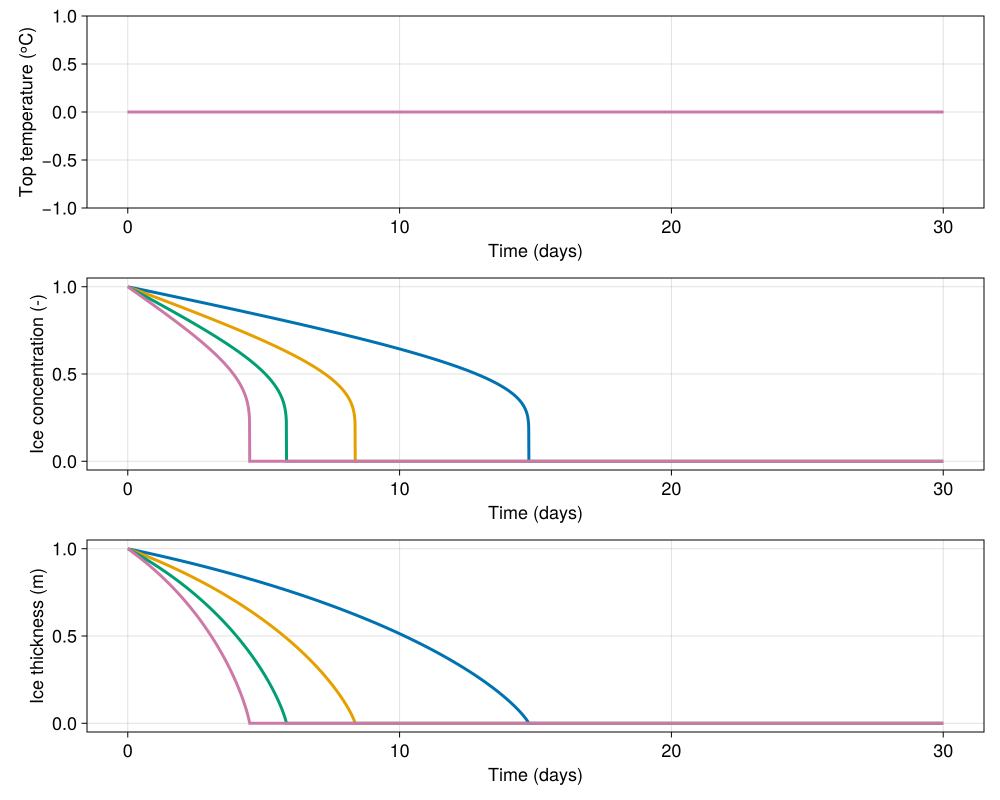

Melting in Spring
A simulation that mimicks the melting of (relatively thick) sea ice in the spring when the sun is shining. The ice is subject to solar insolation and sensible heat fluxes from the atmosphere. Different cells show how the ice melts at different rates depending on the amount of solar insolation they receive.
We start by using Oceananigans to bring in functions for building grids and Simulations and the like.
using Oceananigans
using Oceananigans.Units
using ClimaSeaIce
using CairoMakieGenerate a 1D grid for difference ice columns subject to different solar insolation
grid = RectilinearGrid(size=4, x=(0, 1), topology=(Periodic, Flat, Flat))4×1×1 RectilinearGrid{Float64, Periodic, Flat, Flat} on CPU with 3×0×0 halo
├── Periodic x ∈ [0.0, 1.0) regularly spaced with Δx=0.25
├── Flat y
└── Flat z Build a model of an ice slab that has internal conductive fluxes and that emits radiation from its top surface.
solar_insolation = [-600, -800, -1000, -1200] # W m⁻²
solar_insolation = reshape(solar_insolation, (4, 1, 1))
outgoing_radiation = RadiativeEmission()RadiativeEmission(emissivity = Float64, stefan_boltzmann_constant = Float64, reference_temperature = Float64)The sensible heat flux from the atmosphere is represented by a FluxFunction.
parameters = (
transfer_coefficient = 1e-3, # Unitless
atmosphere_density = 1.225, # kg m⁻³
atmosphere_heat_capacity = 1004, #
atmosphere_temperature = -5, # ᵒC
atmosphere_wind_speed = 5 # m s⁻¹
)(transfer_coefficient = 0.001, atmosphere_density = 1.225, atmosphere_heat_capacity = 1004, atmosphere_temperature = -5, atmosphere_wind_speed = 5)Flux is positive (cooling by fluxing heat up away from upper surface) when Tₐ < Tᵤ:
@inline function sensible_heat_flux(i, j, grid, Tᵤ, clock, fields, parameters)
Cₛ = parameters.transfer_coefficient
ρₐ = parameters.atmosphere_density
cₐ = parameters.atmosphere_heat_capacity
Tₐ = parameters.atmosphere_temperature
uₐ = parameters.atmosphere_wind_speed
ℵ = fields.ℵ[i, j, 1]
return Cₛ * ρₐ * cₐ * uₐ * (Tᵤ - Tₐ) * ℵ
end
aerodynamic_flux = FluxFunction(sensible_heat_flux; parameters)
top_heat_flux = (outgoing_radiation, solar_insolation, aerodynamic_flux)
model = SeaIceModel(grid;
ice_consolidation_thickness = 0.05, # m
top_heat_flux)SeaIceModel{Oceananigans.Architectures.CPU, Oceananigans.Grids.RectilinearGrid}(time = 0 seconds, iteration = 0)
├── grid: 4×1×1 RectilinearGrid{Float64, Periodic, Flat, Flat} on CPU with 3×0×0 halo
├── timestepper: SplitRungeKuttaTimeStepper(3)
├── ice_thermodynamics: SlabThermodynamics
├── advection: Nothing
└── external_heat_fluxes:
├── top: Tuple with 3 fluxes:
│ ├── RadiativeEmission(emissivity = Float64, stefan_boltzmann_constant = Float64, reference_temperature = Float64)
│ ├── 4×1×1 Array{Int64, 3}
│ └── FluxFunction of sensible_heat_flux (generic function with 1 method) with parameters @NamedTuple{transfer_coefficient::Float64, atmosphere_density::Float64, atmosphere_heat_capacity::Int64, atmosphere_temperature::Int64, atmosphere_wind_speed::Int64}
└── bottom: Int64We initialize all the columns with a 1 m thick slab of ice with 100% ice concentration.
set!(model, h=1, ℵ=1)
simulation = Simulation(model, Δt=10minute, stop_time=30days)Simulation of SeaIceModel
├── Next time step: 10 minutes
├── run_wall_time: 0 seconds
├── run_wall_time / iteration: NaN days
├── stop_time: 30 days
├── stop_iteration: Inf
├── wall_time_limit: Inf
├── minimum_relative_step: 0.0
├── callbacks: OrderedDict with 3 entries:
│ ├── stop_time_exceeded => Callback of stop_time_exceeded on IterationInterval(1)
│ ├── stop_iteration_exceeded => Callback of stop_iteration_exceeded on IterationInterval(1)
│ └── wall_time_limit_exceeded => Callback of wall_time_limit_exceeded on IterationInterval(1)
└── output_writers: OrderedDict with no entriesThe data is accumulated in a timeseries for visualization.
timeseries = []
function accumulate_timeseries(sim)
T = model.ice_thermodynamics.top_surface_temperature
h = model.ice_thickness
ℵ = model.ice_concentration
push!(timeseries, (time(sim),
h[1, 1, 1], ℵ[1, 1, 1], T[1, 1, 1],
h[2, 1, 1], ℵ[2, 1, 1], T[2, 1, 1],
h[3, 1, 1], ℵ[3, 1, 1], T[3, 1, 1],
h[4, 1, 1], ℵ[4, 1, 1], T[4, 1, 1]))
end
simulation.callbacks[:save] = Callback(accumulate_timeseries)
run!(simulation)[ Info: Initializing simulation...
[ Info: ... simulation initialization complete (924.662 ms)
[ Info: Executing initial time step...
[ Info: ... initial time step complete (913.988 ms).
[ Info: Simulation is stopping after running for 2.474 seconds.
[ Info: Simulation time 30 days equals or exceeds stop time 30 days.Extract and visualize data
t = [datum[1] for datum in timeseries]
h1 = [datum[2] for datum in timeseries]
ℵ1 = [datum[3] for datum in timeseries]
T1 = [datum[4] for datum in timeseries]
h2 = [datum[5] for datum in timeseries]
ℵ2 = [datum[6] for datum in timeseries]
T2 = [datum[7] for datum in timeseries]
h3 = [datum[8] for datum in timeseries]
ℵ3 = [datum[9] for datum in timeseries]
T3 = [datum[10] for datum in timeseries]
h4 = [datum[11] for datum in timeseries]
ℵ4 = [datum[12] for datum in timeseries]
T4 = [datum[13] for datum in timeseries]
set_theme!(Theme(fontsize=18, linewidth=3))
fig = Figure(size=(1000, 800))
axT = Axis(fig[1, 1], xlabel="Time (days)", ylabel="Top temperature (ᵒC)")
axℵ = Axis(fig[2, 1], xlabel="Time (days)", ylabel="Ice concentration (-)")
axh = Axis(fig[3, 1], xlabel="Time (days)", ylabel="Ice thickness (m)")
lines!(axT, t / day, T1)
lines!(axℵ, t / day, ℵ1)
lines!(axh, t / day, h1)
lines!(axT, t / day, T2)
lines!(axℵ, t / day, ℵ2)
lines!(axh, t / day, h2)
lines!(axT, t / day, T3)
lines!(axℵ, t / day, ℵ3)
lines!(axh, t / day, h3)
lines!(axT, t / day, T4)
lines!(axℵ, t / day, ℵ4)
lines!(axh, t / day, h4)
save("melting_in_spring.png", fig)
This page was generated using Literate.jl.